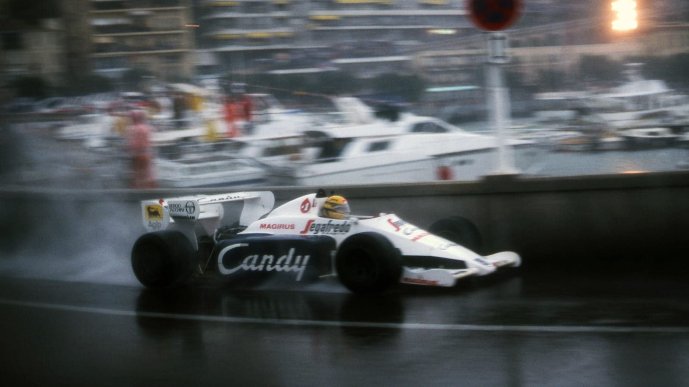
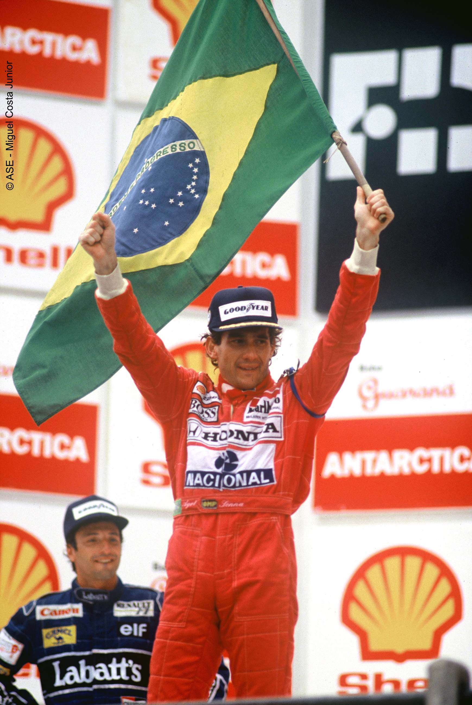
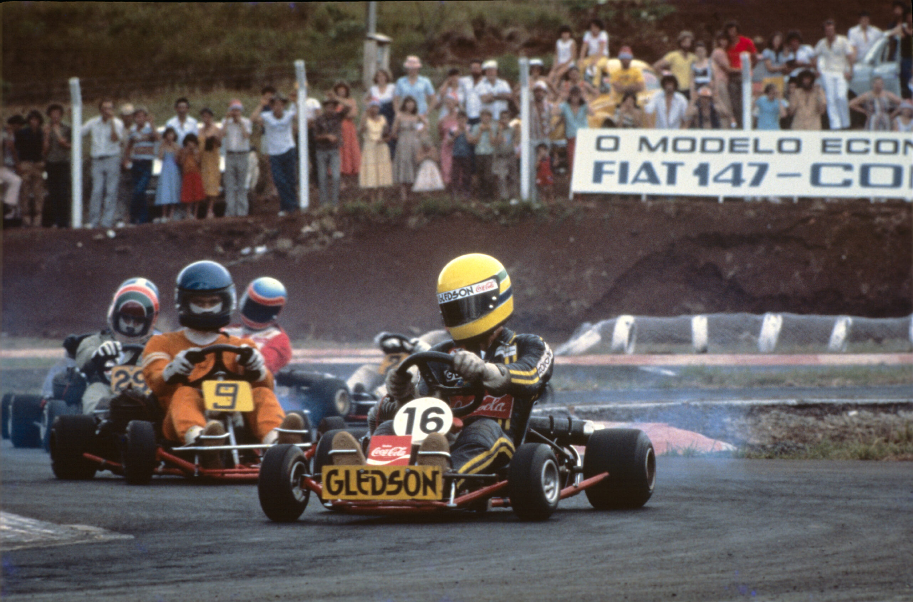
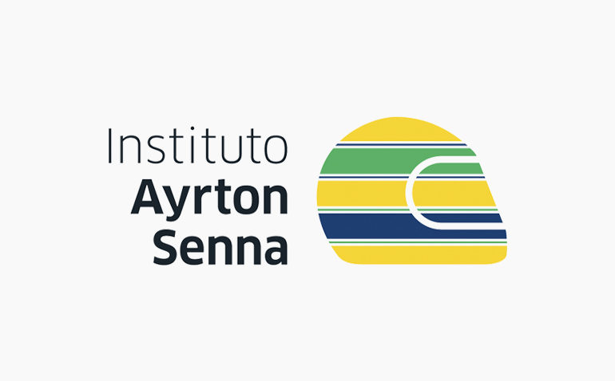

Quem foi Ayrton Senna da Silva?
Ayrton Senna foi um piloto brasileiro de Fórmula 1 que marcou a história do esporte com seu talento e dedicação.
Ele conquistou milhões de fãs ao redor do mundo.

Início da carreira
Senna começou no kart ainda criança e rapidamente se destacou no automobilismo,
indo para Fórmula Ford 1600 (1981), Fórmula Ford 2000 (1982), Fórmula 3 Inglesa (1983) e por fim, Fórmula 1 (1984-1994).
- Kart
- Fórmula Ford
- Entrada na F1

Conquistas
Durante sua carreira, Senna conquistou três títulos mundiais de F1.
| Ano | Equipe | Resultado |
|---|---|---|
| 1988 | McLaren | Campeão |
| 1990 | McLaren | Campeão |
| 1991 | McLaren | Campeão |
| Total: 3 títulos mundiais | ||

Curiosidades
Senna era conhecido por sua habilidade na chuva e sua forte determinação nas corridas.
Senna era agressivo nas pistas, sempre botando o carro em seu limite.
- Especialista na chuva
- Grande rivalidade com outros pilotos
- Extremamente competitivo
- Extremamente determinado,sempre dando de tudo para vencer

Legado
Mesmo após sua morte,Ayrton Senna continua sendo uma inspiração para milhões de pessoas no Brasil e no mundo,
e também,depois de sua morte,foi criado o Instituto Ayrton Senna,sendo um instituto para ajudar crianças e adolescentes.
Clique na imagem abaixo para ir para a página do instituto:
